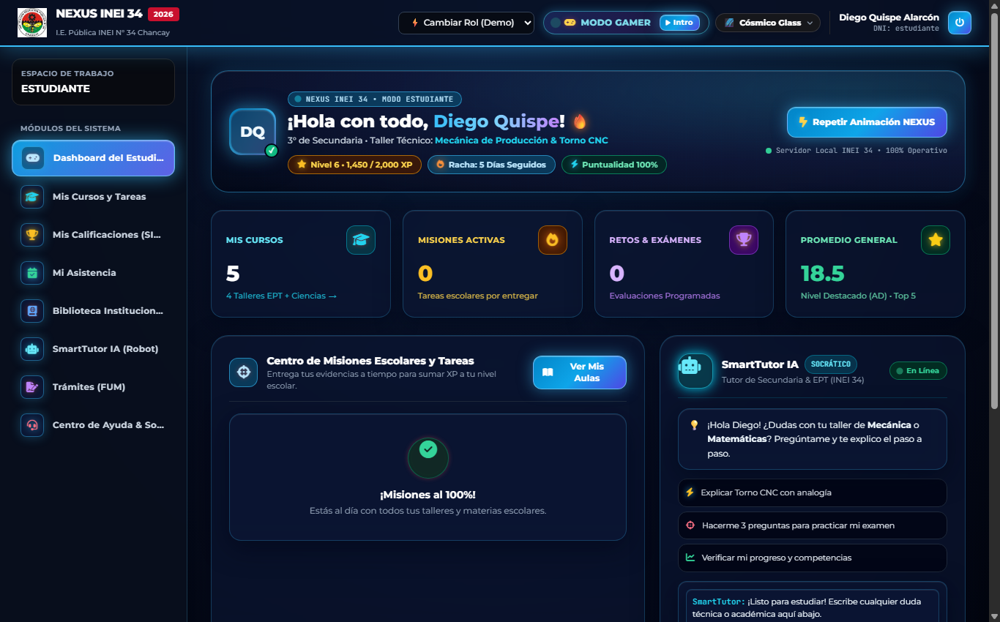

Arquitecto de Experiencias Digitales, Sistemas Web & Agentes de IA
Transformo problemas complejos en interfaces ultra intuitivas (UX/UI), respaldadas por arquitectura de software robusta y potenciadas con Inteligencia Artificial generativa, motores RAG y chatbots automatizados.
Sistemas en producción & prototipos
Multi-agente & recuperación semántica
Figma, wireframes & prototipado ágil
WhatsApp Webhooks & automatización
[+] University: Universidad César Vallejo (Ingeniería de Sistemas)
[+] Target Roles: UX/UI Designer // Frontend Developer // AI Solutions Engineer
[+] Specialized Systems: RAG Architecture, WhatsApp Bots, Multi-Agent Orchestrators
[+] Operational Status: READY FOR RECRUITMENT & FREELANCE
Proyectos de Alto Impacto
Sistemas reales con arquitecturas comprobadas, interfaces de alta gama y automatizaciones con IA que resuelven problemas del mundo real.
INEI 34 Smart Core: Portal e Intranet Institucional
Ecosistema web completo para la digitalización integral de la institución. Diseñé la experiencia de usuario (UX) centrada en 3 roles (Alumnos, Docentes, Directores), implementando trámites virtuales, registro de notas, asistencia y control escolar con interfaz intuitiva, moderna y accesible.

Smart Tutor & Smart Teacher: Sistema Multi-Agente RAG
Plataforma de agentes autónomos con base de conocimiento vectorial indexada. El Smart Tutor asiste al estudiante mediante método socrático sin dar respuestas directas, mientras el Smart Teacher ayuda a los profesores a estructurar sesiones de clase alineadas al currículo oficial.
Plataforma Web de Promoción y Turismo
Sitio web interactivo enfocado en la promoción de destinos turísticos, gastronomía y circuitos culturales. Diseñado con una interfaz visual de alto impacto (UX/UI), navegación fluida, catálogo de atractivos y optimización responsiva para dispositivos móviles.
Sistema de Mesa de Ayuda y Gestión de Incidencias
Plataforma para gestión de tickets técnicos y mantenimiento de equipos. Diseñado con interfaz intuitiva de alta productividad: asignación de técnicos por prioridad, medición de tiempos de atención (SLA), métricas en tiempo real y registro histórico de fallas.
Tesis Smart City: Plataforma de Gestión y Monitoreo Urbano Inteligente
Investigación y desarrollo de un ecosistema para ciudades inteligentes (Smart Cities). Integra monitoreo de variables urbanas, centralización de datos en tiempo real, tableros de control interactivos para toma de decisiones e indicadores para la optimización de servicios públicos.
Habilidades de Alto Rendimiento
La combinación ideal para empresas que buscan innovación real: Diseño UX centrado en personas, solidez técnica y la última frontera en Inteligencia Artificial.
IA, Agentes & Chatbots
[SISTEMAS AUTÓNOMOS & CONVERSACIONALES]
- RAG Architecture: Búsqueda semántica sobre documentos y bases de conocimiento vectoriales.
- WhatsApp Chatbots: Integración de Webhooks y APIs con flujos automatizados 24/7.
- Orquestación Multi-Agente: Diseño de agentes con roles complementarios y toma de decisiones.
- Prompt Engineering Avanzado: Inferencia estructurada, JSON mode y control de alucinaciones.
Diseño UX / UI
[EXPERIENCIA VISUAL & HUMAN CENTRIC]
- Figma Avanzado: Wireframing, prototipado interactivo de alta fidelidad y micro-animaciones.
- Design Systems: Tokens de diseño, librerías de componentes consistentes y escalables.
- UX Research: Mapeo de journeys de usuario, análisis de fricción y pruebas de usabilidad.
- Mobile-First & Accesibilidad: Diseños perfectamente adaptados a cualquier pantalla.
Desarrollo Web & Backend
[SOFTWARE ROBUSTO & DESPLIEGUE]
- Frontend Moderno: HTML5 semántico, Modern CSS, Tailwind CSS, JavaScript modular.
- Python Backend: Frameworks ágiles (Flask, FastAPI), creación y consumo de REST APIs.
- Bases de Datos & Auth: SQLite, PostgreSQL, esquemas relacionales y sesiones seguras.
- DevOps & Control: Git, GitHub, despliegues con Cloudflare Tunnel y servidores Linux.

César Gian Pier Tinedo
Ingeniería de Sistemas • UCV
Diseño con empatía humana, construyo con rigor de ingeniería.
Soy estudiante de Ingeniería de Sistemas en la Universidad César Vallejo (UCV). Mi pasión nace en la intersección de dos mundos que rara vez se encuentran: la estética y claridad del Diseño UX/UI y la precisión lógica del Desarrollo de Software.
En la actualidad, ninguna solución está completa sin la aceleración de la Inteligencia Artificial. He desarrollado motores de búsqueda semántica (RAG), chatbots de mensajería para atención masiva y herramientas de automatización que multiplican la productividad de equipos.
Busco integrarme a equipos de tecnología, startups o empresas donde pueda aportar tanto en la ideación y prototipado visual de productos como en su desarrollo e integración tecnológica.
¿Listo para construir el siguiente gran producto digital?
Escríbeme para conversar sobre prácticas profesionales, vacantes en desarrollo/UX, o proyectos independientes de alto impacto.
ABRIR CONVERSACIÓN EN WHATSAPP